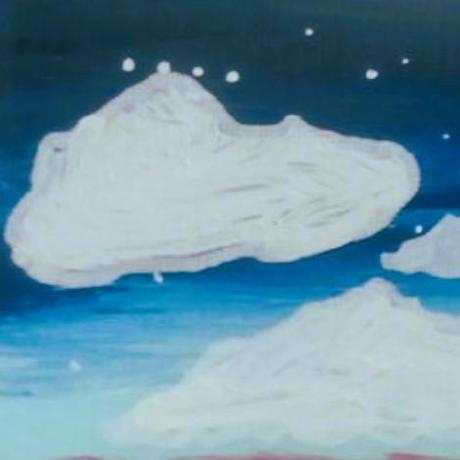

An Open Letter to the Future
To the leaders, developers, science lovers, entrepreneurs, and quiet observers of tomorrow:
I founded this archive to bring us together. It was designed as a reminder that whatever path you choose, you can make the world better in your own unique way.
There is no single "right" way to interact with this signal:
- The Digital Frontier — Volunteer your time with our curated Zooniverse selections to support space research.
- The Physical World — Seek out the hidden art keepsakes left in quiet corners of the earth, or share your own creations.
- The Technologist — Build upon the rocket models, explore our GitHub, and use the visualizer app.
- The Entrepreneur — Build ambitious enterprises and master financial literacy to fuel independence and value over pure profit.
- And So Much More — Dive into the archive, examine the files, and carve out your own way of exploring.

Starry Journey, 2026
Original acrylic painting capturing the transition from the upper atmosphere into the deep cosmic void. The Moore Signal Archive.
This framework operates strictly on an honor system. When you take a piece of this archive or use these free resources, I hope you will pass that joy forward, but that is a quiet promise between you and the world. External systems can enforce laws, but they cannot enforce kindness—that is a choice only you can make. If you do not choose to act out of goodwill for its own sake, no mandate can force you to. I simply chose to believe in something better.
A thousand years from now, my hope is that this work has influenced a vast ecosystem of individuals who are profoundly proud of what they have built. Whether that means leading deep-space aerospace teams, launching ethical enterprises, or simply becoming a kinder friend, parent, or neighbor—you are part of the network.
True systemic change doesn't require grand, sweeping gestures. It is built on small, daily decisions to be just a little better than we were yesterday.
Keep the signal active. Build your future, and pass the joy forward.